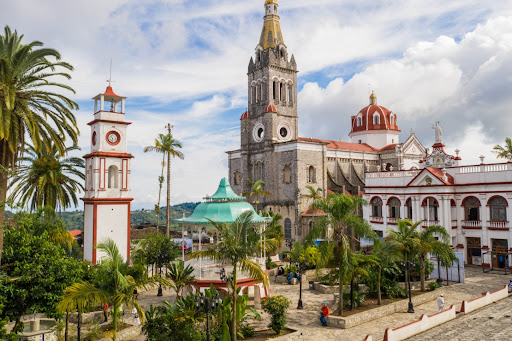
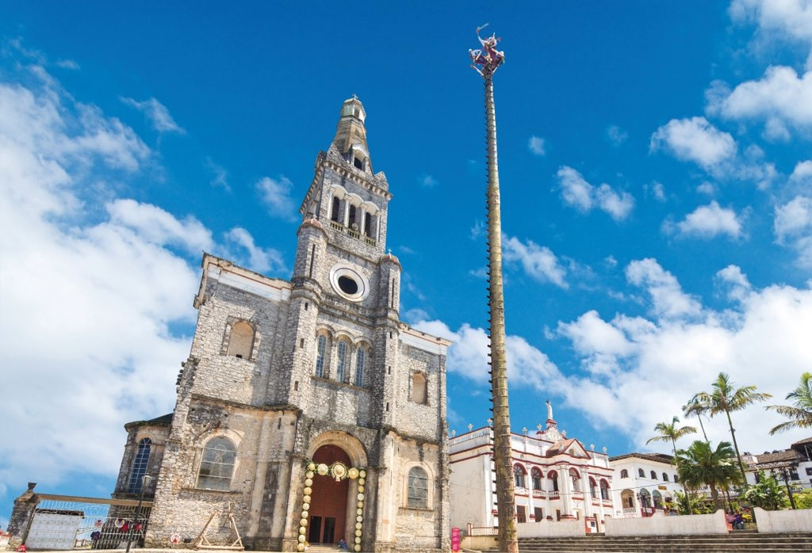
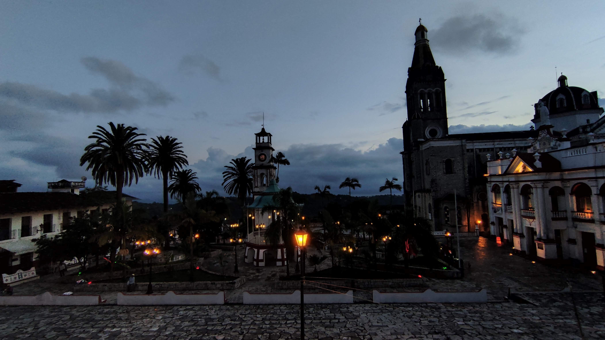
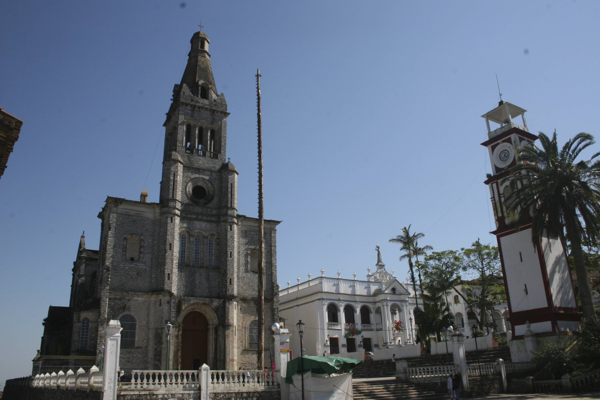
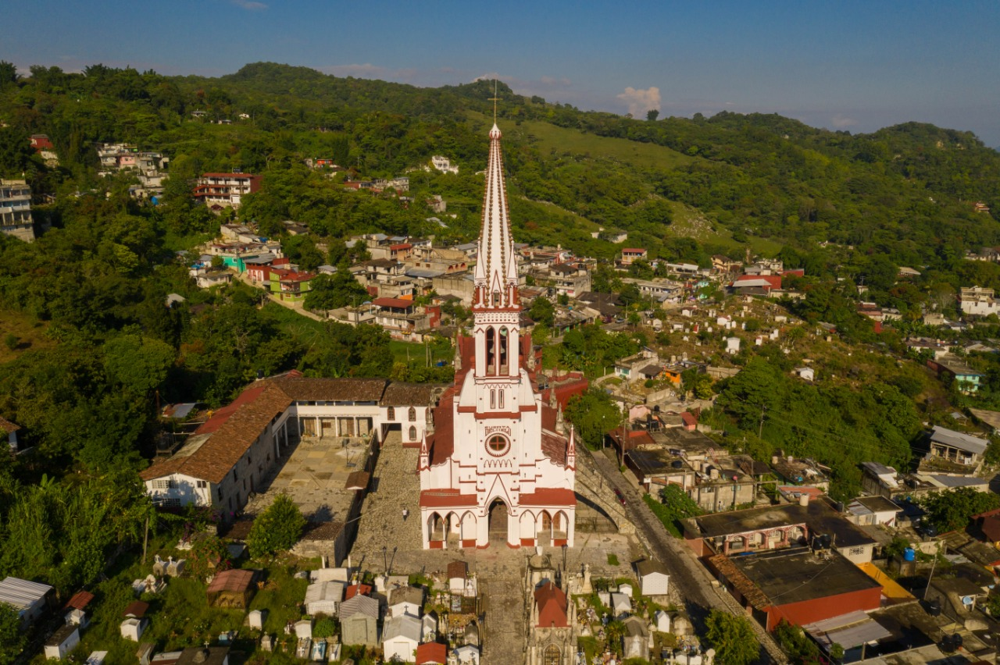
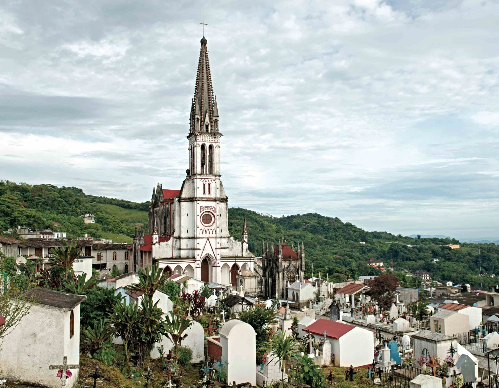
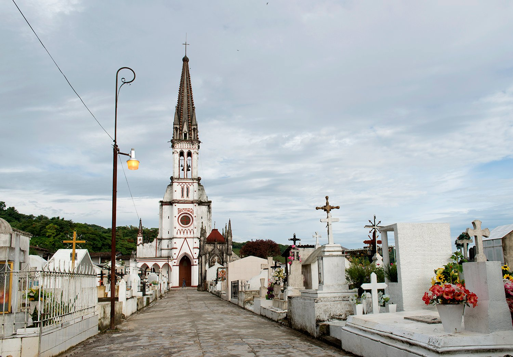

Parroquia de San Francisco de Asís
- 
- 
- 
- 
Ubicación
Calle Miguel Alvarado, col. Centro, Cuetzalan del Progreso, Puebla, C.P. 73560
Historia
La parroquia de San Francisco de Asís tiene un estilo romántico-renacentista y aspecto basilical, el templo se levanta imponente, sobre paredones de enorme altura, antecedidos por una torre de piedra de 60 metros de altura. Su interior, austero, es de planta de cruz y tres naves, en el fondo se erige un ornamento de yeso y en los muros laterales se presentan relieves con la vida de cristo.
Costo de acceso
Entrada gratuita para cualquier persona
Horario de Atención
Lunes a Domingo de 8:00 a 20:00 horas
Descubre más en el siguiente video
Santuario de Guadalupe
- 
- 
- 
Ubicación
Calzada de Guadalupe, esquina con Calle Aldama, Cuetzalan del Progreso, Puebla C.P. 73560
Historia
La construcción del templo se efectúa con solemne ceremonia del 12 de diciembre de 1889, cuando se bendijo el sitio y se colocó la primera piedra. Tiene un estilo gótico flamigero, imita a la basílica de Lourdes en Francia. A la torre se le agregaron como adorno vasijas de barro. La consagró el obispo don Francisco Melitón Vargas, el sábado 19 de Enero de 1895.
Costo de acceso
Entrada gratuita para cualquier persona
Horario de Atención
Lunes a Domingo de 07:30-19:00 hrs